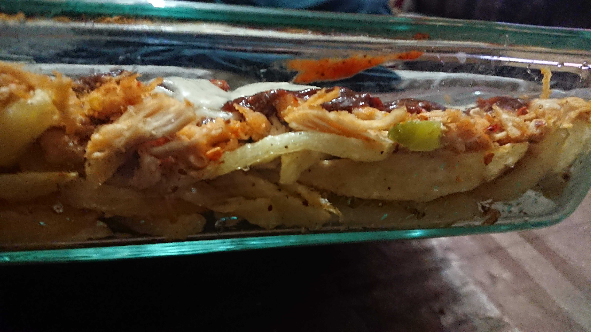

Description
Loaded fries are simply french fries topped with a mix of cheese, chicken, a mild flavored sauce, a savory sauce and optionally some vegetables.
Ingredients
- French fries (cooked and seasoned lightly with salt)
- Ranch sauce, Garlic Mayonnaise, or regular Mayonnaise (for the mild sauce)
- Tabasco, Chipotle or some other hot sauce (the savory sauce)
- A mix of Mozzarella and another cheese of your choice (can be cheddar, parmesan, etc.)
- Cooked Chicken cut into bite-sized pieces
Preparation
- Place a layer of fries in a deep but narrow oven-safe baking dish. The layer should be 1-french fry thick.
- Put some of your chicken (and veggies, if prepped), some of your mild and savory sauces and some of your cheeses on top of the fries, in that order.
- Next lay the fries again, same way as before, followed by the ingredients until you reach the top of your baking dish.
- Make sure that for the last layer you pour all of your cheese on top to create a nice even layer.
- Place the tray into a preheated oven at 300F or 150C and bake until the cheese is fully melted and you start to see some brown spots on it.
- Take out the dish, let it cool for 5-10 minutes before cutting the loaded-fries into lasagna-like chunks and serving.
Return to recipe list